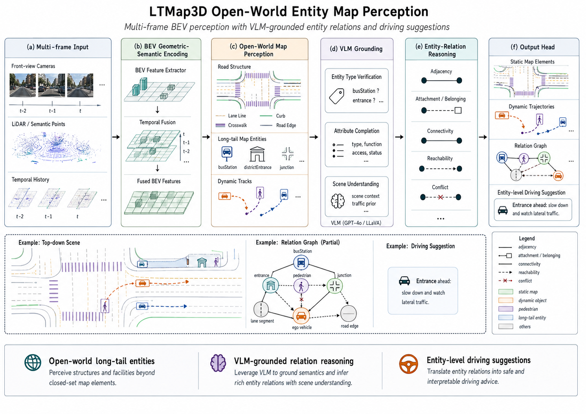

OPEN-WORLD MAP PERCEPTION · VLM-GROUNDED ENTITY REASONING
基于VLM的长尾场景感知与实体地图构建
面向传统 HD Map 难以覆盖的公交站、园区出入口、路口等长尾场景，LTMap3D 将 VLM 场景理解与现有道路几何、语义点云和动态 Track 结合起来，把“地图里没有定义的对象”进一步组织成可定位、可跟踪、可关联的实体地图。
20,000-case EvaluationVLM Entity PerceptionSemantic LiDARTemporal TrackEntity Relations + Driving Advice
摘要
传统矢量地图主要描述车道线、道路边界、停止线等固定类别，但真实驾驶中还存在大量与决策相关、却难以通过封闭类别完整建模的长尾实体。 LTMap3D 在现有道路地图基础上，引入多视角图像、LiDAR / 语义点云、Mask2Map 道路结构与动态目标 Track，利用 VLM 判断场景中存在的长尾实体，并进一步补充实体类别、空间位置、属性和时序身份。 最终输出的不只是单帧检测结果，而是一张包含道路结构、长尾实体、动态对象及实体关系的结构化地图，为后续跨帧 Persistent Map 和 World Model 提供可持续使用的场景信息。
方法概览
从道路几何，到实体级场景地图

定量结果
在统一的 20,000 个 Case长尾场景协议下，评估系统对目标实体的识别能力。
20,000Evaluation Cases
97.77%Precision
92.80%Recall
95.22%F1
F1 对比
+3.02 pp相对最强参考基线的 F1 增益
在保持较高 Precision 的同时，系统能够覆盖大部分目标长尾场景，为后续实体定位、时序跟踪和长期地图维护提供稳定入口。
| 方法 | Precision | Recall | F1 | 协议 |
|---|---|---|---|---|
| MapTRv2 + open-world adapter | 91.80% | 81.70% | 86.40% | 20k internal reference |
| StreamMapNet + open-world adapter | 92.80% | 85.20% | 88.80% | 20k internal reference |
| MapTracker + open-world adapter | 94.10% | 87.80% | 90.80% | 20k internal reference |
| SuperMapNet + open-world adapter | 95.00% | 89.60% | 92.20% | 20k internal reference |
| LTMap3D | 97.77% | 92.80% | 95.22% | 20,000 Cases |
| 系统级回归 | Frame | Divider | Boundary | Ped. Crossing | Vector Total | Dynamic Obs. | Runtime Failures |
|---|---|---|---|---|---|---|---|
| 40-frame regression | 40 | 251 | 172 | 58 | 481 | 4,366 | 0 |
定性结果
下一阶段：LTMap → World Model
本页只讲开放长尾实体地图感知。地图进入未来 4D occupancy / semantic forecasting 后的指标与可视化，独立放在 World Model 页面。